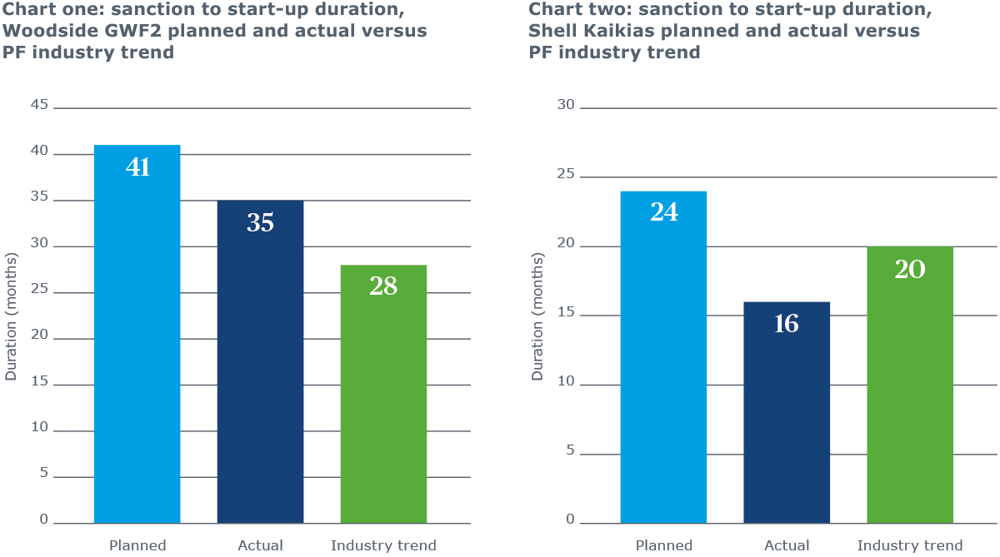

Improved offshore project performance, or cautious optimism?
The media is full of owners announcing offshore oil and gas projects completing under budget and ahead of schedule. Finally, it appears we are hearing good news from the upstream industry. But are we seeing real improvements or is it cautious optimism?
Take, for example, Woodside Energy’s Greater Western Flank phase 2 (GWF2) project which started up in October 2018. Woodside Chief Executive Peter Coleman announced: “The project has been delivered US$630m below the expected cost of approximately US$2bn and six months ahead of schedule”. The final investment decision (FID) was taken in December 2015, meaning the duration was 35 months from sanction to start-up, instead of a planned 41 months.
However, data provided to the Performance Forum (PF) joint industry project (managed by Turner & Townsend) by 25 oil and gas operators from projects completed in the last ten years shows that the expected duration for similar projects should only be 28 months (chart one).
So is bringing GWF2 on six months early a real improvement or simply proving that the original schedule was too long, and further enhancements could have been possible?
Cost savings of almost one third versus budget should be congratulated, but being so far below budget might normally be a sign of poor estimating. The reality is most likely a significant cost saving on the drilling campaign, rather than a major improvement in project execution performance.
Shell, meanwhile, announced the early start of production from its deepwater Kaikias project in the Gulf of Mexico, “around one year ahead of schedule” in May 2018. It also said it had “reduced costs by around 30 percent at this deepwater project since taking the investment decision in early 2017”.
According to Shell’s website, Kaikias was sanctioned in January 2017 and started up in May 2018, versus a planned start-up of January 2019. Actual duration was therefore 16 months, versus a plan of 24 months.

PF trends show a similar project would be around 20 months (chart two), proving that Shell did achieve a real performance improvement on Kaikias. However, what likely drove the faster schedule, as well as the cost reduction, was a significant reduction in scope due to a simplification of the final design versus plan. As a result, the overall improvement may not be as groundbreaking as the media headlines suggest.
One project that has bucked the trend is the Enioperated Zohr field in Egypt. It took only 28 months from discovery to start-up, and only 22 months from sanction to start-up for a 365,000 boed throughput. This is so unique that the data cannot be compared against any other historical project. Disciplines worked in parallel and Eni shared delivery improvement with contractors to encourage collaboration and a culture of speed.
Measure performance correctly or not at all
Project performance is measured by the PF by comparing the final cost and schedule against similar completed projects, with costs adjusted for inflation and market effects. Operators, however, typically compare their out-turn performance against the budget at FID. But there is often no evidence of how accurate their estimate was at budget.
Adding large amounts of contingency to a budget provides greater opportunity to achieve the appearance of performance improvement. Announcements of performance improvement versus budget should be viewed with great caution.
The data doesn’t lie
The PF has analysed cost and schedule data submitted by owners for projects completed in 2008 to 2011, 2012 to 2014 and 2015 to 2018.
Duration is typically now longer, not faster.
North Sea non-deepwater subsea tieback sanction to start-up durations for projects completed in 2015 to 2018 were higher than historical periods for five of the seven datasets submitted.
A similar picture emerged for the five facility completions in deepwater West Africa and Rest of World.
Compounding this, all of the non-deepwater subsea facilities that completed 2015 onwards started detailed engineering prior to sanction, which might let owners make sanction to start-up duration appear faster. A counter argument might be that moving engineering forward represents better project management.
Projects are as likely to cost more than before, instead of less.
PF received costs from 15 subsea facility start-ups between 2015 and 2017, but in most cases the data does not show them to have performed better than projects in previous periods. In non-deepwater, there were just as many points plotting above the industry cost trend as below, for both North Sea and Rest of World.
We should note that it is too early to see all of the final data for subsea projects completed since 2015.
The reality is most likely a significant cost saving on the drilling campaign, rather than a major improvement in project execution performance.
Achieving performance improvements
While individual projects have demonstrated better performance against their own budget, the data does not show them to have achieved the groundbreaking cost or schedule performance improvements as announced in the media.
But it may be too soon to judge the industry’s efforts. Only a small number of projects sanctioned since the downturn are onstream. Projects completing in late 2018 and throughout 2019 could change the picture if sufficient capital discipline is achieved.
With costs on the rise once more, the best chance of achieving performance improvements is to be flexible, use your best people, think big and act small, reduce governance and share success by collaborating with the supply chain.
Five steps to achieve improvements
- Smaller, flexible owner teams
Subsea facilities in the North Sea which started up from 2015 onwards have reduced owners’ team costs by 40 percent as a result of shrinking headcount... Having the right people in the right place at the right time can save significant cost. - Put your best talent where it can be most effective
Tougher pre-FID screening has resulted in increased attention on project execution and capital discipline. With fewer projects making it through, there is a view that the best project directors and delivery teams are working on those sanctioned. - Make performance improvement a common goal
There has been a growing movement towards increased collaboration and alignment on contracts, resulting in alliancing with the supply chain to appropriately allocate risk and make profitability a shared goal. - Think big, act small
Operators have shifted tack in the last three years, focusing on near-field projects that can be completed as subsea tiebacks into existing infrastructure. These require less capital expenditure but generate returns much more quickly, increasing cash flow. Executing smaller, simpler scopes of work improves efficiency, removes interfaces and provides clarity of cost discipline. - Think fast, reduce governance
Embed a culture of speed, work fast in procurement, and examine whether working in parallel can reduce duration. Identify how quickly you can bring a project through the pre-FID stages. Re-examine governance and stage gate processes. Consider a ‘fast-paced process’ for smaller, simpler projects with lower risk.
This content is part of the 360°View, issue 10